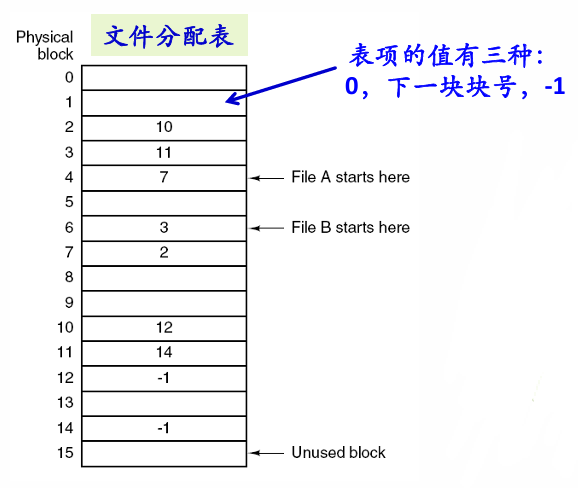
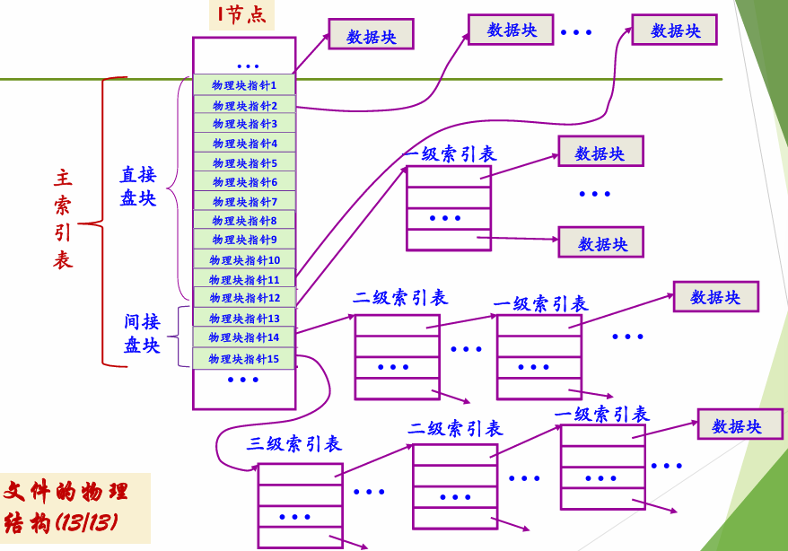

一、文件系统基本概念 #
1.1 文件是什么？ #
文件是对磁盘的抽象。文件是一组带标识(标识即为文件名)的、在逻辑上有完整意义的信息项序列。其中信息项：构成文件内容的基本单位（单个字节，或多个字节），各信息项之间具有顺序关系。
信息项0 │ 信息项1 │ …… │ 信息项i │ …… │ 信息项n-1 │
↑ 读写指针文件内容的意义由文件的建立者和使用者解释。
1.2 文件分类（UNIX） #
| 类型 | 说明 |
|---|---|
| 普通文件（regular） | 用户信息，ASCII 或二进制 |
| 目录文件（directory） | 管理文件系统的系统文件 |
| 特殊文件（special） | 字符设备文件（串行 I/O）、块设备文件（磁盘） |
| 管道文件、套接字、符号链接文件 | 进程间通信等 |
1.3 文件系统 #
统一管理信息资源，管理文件的存储、检索、更新，提供安全可靠的共享和保护手段。
核心功能：
- 统一管理磁盘空间，实施分配与回收
- 实现文件的按名存取（名字空间 ↔ 磁盘空间的映射）
- 实现文件信息共享，提供可靠性和安全保障
- 向用户提供方便使用的接口
- 提供与 I/O 系统的统一接口
1.4 典型文件系统 #
- 本地文件系统：EXT4、XFS、Btrfs、NTFS、APFS、OpenZFS、exFAT
- 移动设备专用文件系统：F2FS
- 分布式文件系统：HDFS、CephFS、GlusterFS、Lustre
二、文件的逻辑结构与存取方式 #
2.1 逻辑结构 #
从用户角度看文件，由用户的访问方式确定：
| 类型 | 特点 | 适用场景 |
|---|---|---|
| 流式文件 | 字节序列，无结构 | 源程序、可执行文件 |
| 记录式文件 | 由记录序列组成，每个记录内部有结构 | 数据库、信息管理系统 |
除了看成字节序列、记录序列外还有树、堆、索引等等方式。
2.2 存取方式 #
- 顺序存取：按字节/记录依次读取，自动移动读写指针
- 随机存取：从任意位置读写（如 UNIX 的
seek操作）
三、存储介质与物理块 #
3.1 相关术语 #
| 术语 | 含义 |
|---|---|
| 扇区（Sector） | 磁盘的物理存储单元，通常 512B，一般保证扇区写入的原子性 |
| 物理块 / 磁盘块 / 数据块 / 簇 | 信息存储、传输、分配的基本单位，由若干扇区组成 |
| 分区（Partition） | 把一个物理磁盘的存储空间划分为几个相互 |
| 独立的部分，每个分区是独立的文件系统 | |
| 卷（Volume） | 逻辑分区，一个文件卷上包含文件系统信息、文件、未分配空间 |
| 格式化（Format） | 在卷上建立文件系统的过程 |

在有了块之后，扇区差不多就被屏蔽了，至于一个块可以有多少个扇区可以自己定义。块的索引用逻辑块号LBA来进行。对于OS来说看不到真正的PBA，所谓的数据块一开始也都是LBA，都需要经过映射才能得到真正的物理地址来读取真正的数据。
3.2 机械磁盘访问（HDD） #
一次访盘请求 = 读/写 + 磁盘地址（磁头号、柱面号、扇区号） + 内存地址。
三个动作：
- 寻道：磁臂带动着磁头移到指定磁道，往往需要较长时间
- 旋转延迟：等待指定扇区旋转到磁头下
- 数据传输：数据在磁盘与内存之间的实际传输
3.3 SSD 特点 #
电子过程（组件关系）：
OS(LBA) ←→ SSD 控制器 ←→ DRAM 缓存（含 FTL 映射表）
|
↓
NAND 闪存块（实际存储）- 读：OS 发出 LBA → 控制器查 FTL 映射表定位 NAND 物理页 → 读入 DRAM → 传回 OS
- 写：OS 发出 LBA + 数据 → 控制器先写 DRAM → FTL 更新映射 → 异步刷入 NAND
- 最小写入单位是页（4KB
16KB），只能写空页或擦除后重写；最小擦除单位是块（通常 64256 页），远大于写入单位。这里的块是SSD中的擦写概念的，与LBA无关。 - 闪存物理存储单元（块、页）离散分布，无法直接对应操作系统的连续逻辑地址。
- 块有擦除寿命限制，需要磨损均衡（Wear Leveling）延长寿命。
- FTL（Flash Translation Layer）在底层完成逻辑地址到物理地址的映射，操作系统只需使用 LBA（Logical Block Address）访问，无需关心内部细节。
- 地址不连续：闪存的物理存储单元（块、页）是离散的，无法直接对应操作系统的连续逻辑地址
对于 SSD 没有机械部件了，只需要考虑数据传输的时间。
3.4 LBA 与 PBA #
| LBA（Logical Block Address） | PBA（Physical Block Address） | |
|---|---|---|
| 定义 | 逻辑块地址，OS 眼中磁盘的"线性连续地址" | 物理块地址，NAND 闪存中实际的存储位置 |
| 发出方 | 操作系统（文件系统/块层） | SSD 控制器内部，经过 FTL 映射后得到 |
| 特性 | 连续的、线性的；OS 认为磁盘就是一串 0, 1, 2, … 号块 | 离散的、非线性的；受限于 NAND 的物理布局和状态 |
| 是否可见 | 操作系统可见 | 操作系统不可见，完全由 FTL 内部管理 |
| 映射关系 | LBA →(FTL 转换)→ PBA | PBA 可能随写时重定向而变化（同一个 LBA 可映射到不同 PBA） |
核心思想：LBA 是对 OS 的抽象承诺——“我就给你一串块号，你随便读写”，这是OS对于文件系统读写的接口；PBA 是 SSD 内部实现——受限于 NAND 不能原地覆盖、有擦除寿命等物理约束。FTL 在中间做翻译，使得 OS 可以用简单的线性块号访问，而 SSD 底层可以做写时重定向、垃圾回收、磨损均衡等优化，OS 完全不用关心。
在SSD中，由FTL来进行二者的映射，并通过磨损优化、垃圾回收来优化寿命；在HHD中，由硬件的固件管理来进行简单的映射得到CHS（磁头柱面扇区）。
四、文件控制块（FCB）与文件操作 #
4.1 FCB（File Control Block） #
操作系统为管理文件而设置的数据结构，存放管理文件所需的所有信息（即文件元数据）。
常用属性：文件名、文件号、保护/口令、创建者/拥有者、文件地址（提供LBA的信息）、文件大小、文件类型、创建/修改/访问时间、各种标志（只读、隐藏、系统、归档、临时、锁等）
4.2 文件基本操作 #
| 操作 | 说明 |
|---|---|
| create / delete | 建立 / 删除文件 |
| open / close | 打开 / 关闭文件（访问前必须打开） |
| read / write | 读写文件 |
| append / seek | 追加数据 / 定位读写指针 |
| get/set attributes | 读取/设置文件属性 |
| rename | 重命名 |
五、文件目录 #
5.1 目录、目录项与目录文件 #
- 文件目录：将所有文件的管理信息组织在一起，统一管理每个文件的信息
- 目录文件：将文件目录以文件形式存放在磁盘上，内容由目录项组成，是典型的记录式文件
- 目录项：构成目录文件的基本单元，通常包含 FCB（或 FCB 的关键字段）
为确保映射的完整性，只允许内核修改目录，应用程序通过系统调用（如mkdir）访问目录。
5.2 树形目录结构 #
- 从根目录开始的绝对路径，或从当前目录开始的相对路径
- 每个进程有一个当前目录（工作目录），可改变
- 典型目录操作：create、delete、opendir、closedir、readdir、rename、link、unlink
5.3 目录检索 #
访问一个文件分两步骤：
- 目录检索：按文件名查找目录项/FCB（文件名解析）
- 文件寻址：根据 FCB 中文件物理地址信息，计算目标记录在介质上的地址
5.4 目录项分解法（提高检索速度） #
将 FCB 分成两部分：
| 部分 | 内容 |
|---|---|
| 符号目录项 | 文件名 + 文件号（i 节点号） |
| 基本目录项 | 除文件名外的所有字段 |
例子：FCB 48 字节，物理块 512 字节，128 个目录项
- 分解前：平均访盘 7 次
- 分解后：平均访盘 2.5 次
六、文件系统的实现 #
实现文件系统需要考虑磁盘与内存中的内容布局
6.1 磁盘上的文件系统布局 #
UNIX 布局 #

每一个分区内是一个文件系统
FAT 布局 #

6.2 文件的物理结构（存储结构） #
核心问题：文件在物理介质上的存放方式——分配给文件的LBA的位置和顺序。 要考虑的问题：存储效率：外部碎片等；读写性能：访问速度
6.2.1 连续结构 #
文件信息存放在若干连续的LBA中。
| 优点 | 缺点 |
|---|---|
| 简单、高效 | 文件不能动态增长（需预留空间） |
| 支持顺序和随机存取 | 不利于插入和删除 |
| 寻道次数最少 | 外部碎片问题 |
FCB 中记录文件地址的LBA：起始LBA块号 + 文件长度（块数）。
6.2.2 链接结构 #
文件信息存放在若干不连续的LBA中，各块之间通过指针连接。
| 优点 | 缺点 |
|---|---|
| 无外部碎片 | 存取速度慢，不适于随机存取 |
| 利于文件插入删除和动态扩充 | 可靠性问题（链接指针出错） |
| - | 链接指针占用空间、更多寻道 |
FCB 中记录：首块 LBA 块号。（虽然是一个链表，但是也不需要遍历全部的块：下一个 LBA 的位置已经在该 LBA 中存了）

这样有一些问题：纯链接有两个致命缺陷，(1) 访问文件第 N 块必须从第 1 块开始逐个读，无法随机存取；(2) 指针和数据混在一起，指针损坏则整个链断掉。FAT（文件分配表）则是把链表的指针和数据分离，将所有"下一块号"指针集中搬到一张独立的表里（FAT），数据块只放数据。

纯链接：
块4 [数据 + 指针→7] → 块7 [数据 + 指针→2] → 块2 [数据 + 指针→文件尾]
↑ 指针和数据混在一起，必须读磁盘才能跟随链
FAT：
磁盘上： 块4 [纯数据] 块7 [纯数据] 块2 [纯数据]
内存中： FAT 表（数组，下标 = 当前块号，值 = 下一块号）
FAT[2] = -1 (文件尾)
FAT[4] = 7 ← FCB 记录首块号 4，查 FAT[4] 得到下一块 7
FAT[7] = 2 ← 查 FAT[7] 得到 2
……FAT这样的好处是，在运行时缓存在内存里，要找到文件第 N 块，直接在内存里顺着 FAT 数 N 次就行，不需要读磁盘。随机存取成为可能。而且 FAT 有两份拷贝（FAT1 + FAT2 互为备份），一份坏了还有另一份。
文件的起始块号从何处得到？从FCB中查找。
fat表中可不可以理解为从fcb中找到第一个LBA然后从表中读，不断找到下一个LBA；然后os就能用LBA去找到对应的PBA。也就是说,fat存的都是LBA的值?
对，理解完全正确。
FAT 表就是一个以 LBA 为索引、以 LBA 为值的数组：
FAT[当前LBA] = 下一个LBA
OS 从头到尾只跟 LBA 打交道。LBA→PBA的转换在下面由磁盘固件（HDD）或 FTL（SSD）完成，OS完全不知道也不关心。这正好接回 3.4 节说的——LBA 是 OS 和存储设备之间的接口约定，FAT 表全程只存 LBA。
6.2.3 索引结构 #
系统为每个文件建立一个索引表，将文件占用的块号存放在一个索引表中。一个索引表就是磁盘块地址数组，其中第i个条目指 向文件的第i块。
| 优点 | 缺点 |
|---|---|
| 保持链接结构的优点，又解决随机存取问题 | 较多寻道 |
| 支持动态增长、插入删除 | 索引表本身占用空间 |
FCB 中记录：索引表所在块号。
索引表过大的解决方案：
- 链接方式: 多个索引表盘块之间链接
- 多级索引: 二级索引 → 一级索引 → 数据块，将文件的索引表（二级索引）的地址放在另一个索引表（一级索引）中
- 综合模式: 直接索引 + 间接索引结合 （顶级索引表的字段可以是一个放数据的LBA，也可以是次级索引表的LBA）
6.2.4 UNIX 多级索引（综合模式） #
每个文件的 i 节点中有 15 个索引项：
索引 0~11 → 直接寻址（12 个数据块）
索引 12 → 一级间接索引（→ 256 个数据块）
索引 13 → 二级间接索引（→ 256×256 个数据块）
索引 14 → 三级间接索引（→ 256³ 个数据块）小文件直接用直接寻址，大文件逐级扩展，兼顾效率和容量。

6.3 目录文件的组织方式 #
目录项的组织方式：
- 顺序表：简单，查找需线性搜索
- 散列表：根据文件名计算散列值定位，查找速度快
- B 树 / B+ 树：NTFS 采用，大目录下依然高效
6.4 文件共享 #
| 方式 | 原理 | 特点 |
|---|---|---|
| 硬链接 | 多个目录项指向同一个 i 节点 | 共享计数归零才删除文件；不能跨文件系统 |
| 软链接（符号链接） | 建立特殊类型文件，内容为共享文件路径名 | 可跨文件系统甚至跨网络；系统开销大 |
七、磁盘空间管理 #
7.1 空闲空间管理方法 #
| 方法 | 说明 |
|---|---|
| 空闲块位图 | 每块对应一位，0=空闲/1=已分配；块号 = 字号×字长 + 位号 |
| 空闲块表 | 所有空闲块号记录在一个表中 |
| 空闲块链表 | 所有空闲块链成链表 |
| 成组链接法 | UNIX 采用——将空闲块分组，每组首块记录下一组信息 |
7.2 UNIX 成组链接法 #
- 专用块记录当前空闲块组：
[空闲块数 N, 空闲块号1, …, 空闲块号N] - 分配时：从专用块取块；若剩最后一块，该块中存着下一组信息
- 回收时：若当前组不满，填入；若满，将当前组信息写入回收块，回收块成为新组
八、内存中的数据结构（打开文件管理） #
UNIX 的文件打开结构 #
| 结构 | 范围 | 内容 |
|---|---|---|
| 用户打开文件表 | 每个进程一个 | 文件描述符、读写指针、i 节点指针、打开方式 → 位于 PCB 中 |
| 系统打开文件表 | 整个系统一个 | FCB(i 节点) 信息、引用计数、修改标志 |
打开文件流程：
- 根据路径名查目录，找到 i 节点号
- 查系统打开文件表：若已打开 → 共享计数 +1；否则将 i 节点填入
- 检查访问权限
- 在用户打开文件表中取空表项，指向系统打开文件表
- 返回文件描述符（fd）——非负整数，用于后续操作
九、文件系统的挂载（Mount） #
将一个文件系统加入到另一个文件系统，用户提供：被挂载文件系统的根目录 + 挂载点。挂载后，被挂载文件系统的目录树出现在挂载点之下。
十、虚拟文件系统（VFS） #
VFS 是一个抽象层，为不同文件系统提供统一接口。用户程序以相同方式访问不同文件系统，屏蔽底层差异。
工作流程：
- VFS 对用户发起的文件系统调用进行路径解析
- 查找对应的目录项（dentry）和 inode
- 确定目标文件所在的真实文件系统
- 调用对应文件系统实现的具体方法
- 返回结果给用户
十一、文件系统实例 #
11.1 UNIX 文件系统 #
- FCB = 目录项（文件名 + i 节点号） + i 节点（文件属性 + 数据块指针）
- 目录文件由目录项构成
- 每个文件：1 个目录项 + 1 个 i 节点 + 若干磁盘块
- i 节点包含 15 个索引项，采用直接 + 多级间接索引
11.2 FAT 文件系统 #
- 以簇为单位分配，FAT 表项描述簇的分配状态和下一簇号
- FAT12 / FAT16 / FAT32 的区别在于表项位数
- 引导扇区包含 BPB（BIOS 参数块），记录扇区大小、每簇扇区数等
- FAT32：FAT 表项 32 位，根目录起始簇号通常为 2
- 目录项占 32 字节，根目录大小固定（FAT16 中）
11.3 NTFS 文件系统 #
设计目标 #
可靠、高效、安全——原子事务、冗余存储、综合安全模型。
核心概念 #
| 概念 | 说明 |
|---|---|
| MFT（主控文件表） | NTFS 核心，以文件记录数组实现，每个文件/目录至少一个 MFT 项 |
| 文件引用号 | 64 位，文件号（48 位）+ 顺序号 |
| 属性 | 所有信息都是属性，文件内容是"未命名数据属性流" |
| 常驻属性 | 直接存放在 MFT 项中（标准信息、文件名等） |
| 非常驻属性 | 数据超出 MFT 项空间，存储在卷中其他簇 |
| VCN / LCN | VCN（虚拟簇号）用于文件内引用，LCN（逻辑簇号）用于卷内定位 |
| Run / Extent | 非常驻属性中的连续簇组，记录（VCN 起始, LCN 起始, 簇数） |
目录组织 #
- 目录中文件名按 B+ 树排序存储在索引缓冲区中
- 索引分配属性包含 VCN→LCN 的映射
NTFS 特色功能 #
- 数据压缩（以 16 个簇为压缩单元）
- 加密文件系统（EFS）
- 日志功能（$LogFile）
- MFT 前 16 个项为元数据文件保留（$Mft、$MftMirr、$LogFile、$Volume、$Bitmap 等）
十二、其他常用文件系统 #
| 文件系统 | 特点 |
|---|---|
| ext4 | Linux 默认，extents 分配、延迟分配、兼容 ext3/ext2 |
| XFS | 高性能日志文件系统，B+ 树元数据，大文件顺序读写优秀 |
| Btrfs | 写时复制、快照、数据压缩、RAID、子卷管理 |
| ZFS / OpenZFS | 集文件系统与卷管理于一体，数据完整性校验、单卷最大 256ZB |
| APFS | Apple 为 SSD 优化的现代文件系统 |
| exFAT | 跨平台轻量，突破 FAT32 单文件 4GB 限制 |
| F2FS | 闪存友好，日志结构文件系统，为 NAND 闪存设计 |